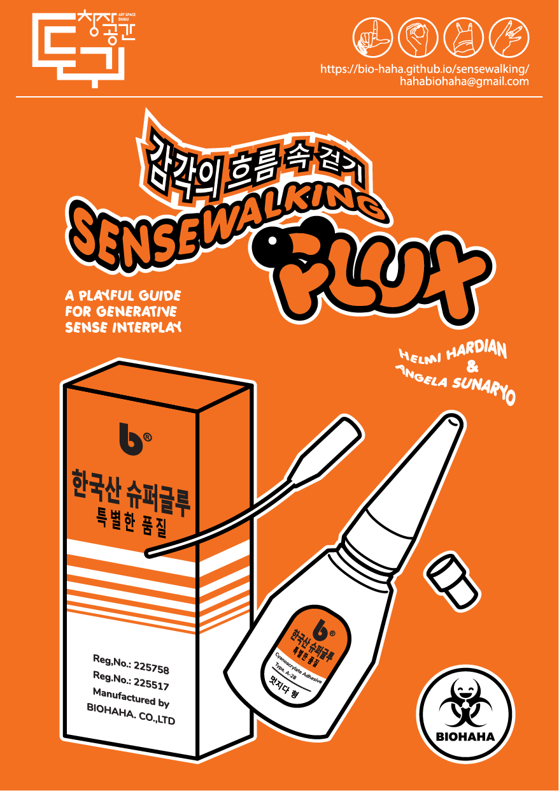
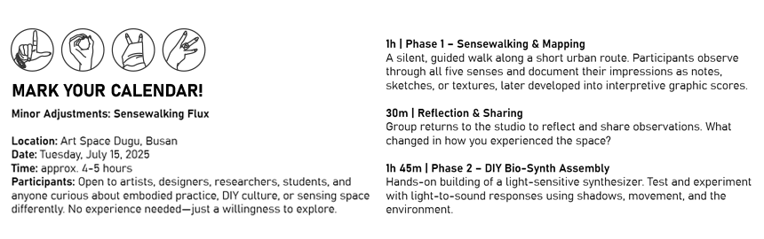
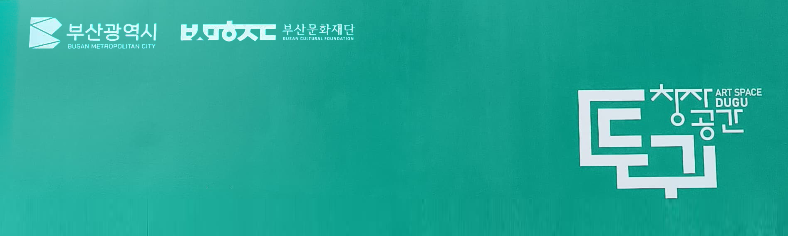
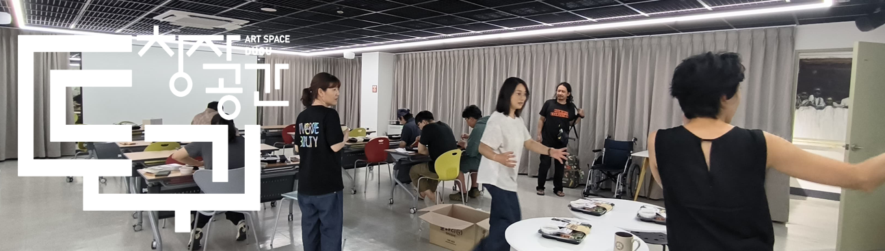

Following previous chapters in Bandung and Gwangju, this edition unfolds along the shoreline of Gwangalli Beach, Busan, a place where sound, air, water, and light constantly interact.
Participants were invited to explore how the coastal environment shapes sensory experience: the vibration of waves against the shore, the taste of salt in the air, the texture of sand and concrete, the rhythm of lights reflected on the sea.
Each walk became a living record of perception, an encounter between body and landscape, later translated into sound through Bio-synth.

Sensewalking Flux Zine - Art Space Dugu Download
This project unfolds in two phases:
// Sensewalking & Mapping – Participants explore Gwangalli Beach Busan through embodied perception, documenting their experiences through sketches, sound patterns, textures, and bodily sensations. These observations are converted into a graphic score, capturing an intersubjective experience of the landscape.
// DIY Bio-Synth Workshop – Participants assemble a light-sensitive synthesizer, establishing a connection between visual stimuli and sound.
Optional Phase:
// Collective Audio-Visual Performance – The generated score serves as a guide for an improvised performance in public space, merging movement, sound, and visual projections into an intersubjective ecology between body, space, and technology.

This project highlights spontaneity, perception, and intersubjectivity, fostering an egalitarian interaction between the landscape and its inhabitants. By positioning the environment as a "living instrument," Sensewalking Flux celebrates the unpredictability that emerges from the ecotone between body, space, and technology.
Art Space Dugu

Art Space Dugu - Instagram
Minor Adjustment: Sensewalking Flux - Art Space Dugu
Busan — July 15, 2025
Organised by Junghun Kim, Hyemin Son
The Art space Dugu is created to support the creation, collaboration and exchange activities of artists with and without disabilities. It aims to be a collective for collaboration with a view to the social function of art, and contributes to the promotion of diversity and inclusion in the arts through civic engagement. Art space Dugu is presenting 6 artists in their residency art studio run by Busan Cultural Foundation.
Artist Junghun Kim and Hyemin Son organise the project titled Minor Adjustments seeking for collaboration as a learning space with different bodies. The project stems from an exploration of how beings with different bodies, speeds, and perceptions can move together. Collaboration is not simply working together, but the accumulation of “small adjustments”: following or waiting for the sensibilities of others, adjusting one's own pace. And this process of adjustment becomes a practice of coexistence, or “symbiosis”, of differences rather than homogenisation. Through the sensibilities of the body, we visualise the differences and movements between senses and extend them into collaborative workshops, archives, and performances.
Minor Adjustments - Workshops:
1. Sensewalking Flux with Biohaha
2. Reading and writing: performances that connect text and body
3. Mixing and translating: Connecting body and sound in performance
4. Tune up: Connecting survival/exploration performance
5. Tactile/Sensory Connection Performance
Participating artists: 6 Art Space Dugu residence artists
Workshops period: July to October 2025

Invited by Art Space Dugu, Biohaha conducted a participatory Sensewalking Flux exploring the embodied, multisensory landscape of Gwangalli Beach - Busan. The activity unfolded in two parts: mapping the sensory rhythms of Gwangalli Beach, co-creating bio-synths from collected impressions and found materials.

Video Documentation - Sensewalking Flux
The session reflected on how sensory perception can become both a method of mapping and a shared language between human and environment, merging listening, walking, and making as one continuous practice.
Phase 1
Sensewalking & Mapping
"Observing the environment around Gwangalli Beach through the senses—textures, movements, sounds, and the shifting rhythm of the seashore."
Gwangalli Beach, Busan | 15 July 2025
Converting
"The observations result are converted into a graphic score, capturing an intersubjective experience of the landscape."
Art Space Dugu, Busan | 15 July 2025
Reflections on Phase 1
Sensewalking & Mapping
Dugu Beach offered a completely different sensory landscape from our previous workshops. The beach presented an open, ever-changing environment shaped by sunlight, sand, wind, waves, and the movements of people around us. These stimuli created a vivid field of perception that encouraged participants to tune into their bodies with heightened awareness.
We began by sitting together in a circle for a brief grounding exercise, focusing on breath and bodily presence. This simple practice helped everyone settle into the moment and sharpen their senses before beginning their individual explorations. Once we dispersed, the beach became a site of playful and intuitive interaction. Some participants immediately ran into the water, experiencing the contrast between the intense heat of the sun on their skin and the sudden coolness of the sea. Others tasted small seashells to understand their texture and salinity. Footprints and tractor trails across the sand became visual traces of movement, while the rhythmic sounds of nearby shops and passing traffic blended with the steady pulse of waves.
A few participants sat right where the shoreline met the water, feeling the shifting motion as the sea advanced and retreated. Others collected and arranged seashells, creating small compositions inspired by the textures and rhythms of the beach.
Another meaningful aspect of this session was the presence of an artist with special needs. The group welcomed and supported one another with warmth and patience, creating an inclusive atmosphere where everyone felt safe to express themselves. This sense of collective care enriched the experience, reminding us that embodied practices become even more powerful when shared across diverse bodies and ways of sensing the world.
Phase 2
DIY Bio-Synth Workshop
"Building, tweaking, and experimenting—participants shape sound through circuits and collaboration."
Art Space Dugu, Busan | 15 July 2025
Reflections on Phase 2
DIY Bio-Synth Workshop
After the sensory walk on the beach, participants gathered around the tables to begin assembling their DIY bio-synths. The process required patience and attention, especially when learning how to identify the legs of the IC and understanding how the light sensor worked within the circuit. These technical steps became opportunities for both curiosity and empowerment.
For many participants, especially those with special needs, the workshop offered an important sense of independence. Rather than doing the steps for them, we guided gently, allowing them to take the lead. This approach proved meaningful. One participant wanted to solder the components on her own, and when she succeeded, she lit up with a proud and happy smile. Small challenges like accidentally reversing the positive and negative ends became learning moments that strengthened their confidence rather than discouraging them.
As each synthesizer came to life, participants began experimenting with sound. They used their graphic scores from Phase 1, moving them above the photoresistor to shape rhythm and tone. Every person developed their own style of play, resulting in a series of individual mini-performances. The sounds ranged from soft pulses to playful beeps, each reflecting the maker’s personality and sensory experience from the beach earlier that day.
Some participants asked whether it was possible to control or tune the pitch more precisely. We explained that it is absolutely possible with practice and experimentation, which opened the door to future curiosity and growth. By the end of the session, the beachside workshop had transformed into a space of discovery, independence, and shared celebration. Each person left with a sense of achievement, holding a small instrument they had built with their own hands.
By the end of Sensewalking Flux, the distinction between observer and participant, listener and performer had blurred. What began as a structured exercise in sensory awareness evolved into a collective exploration of how we experience and reimagine our surroundings.
The question that remains: How will you continue to listen?

Credits:
Documentation: Biohaha, Art Space Dugu, Hyemin Son RBSC
Illustrations: Biohaha
Back Cover Illustration: Heri Subyantoro - @thegarapan